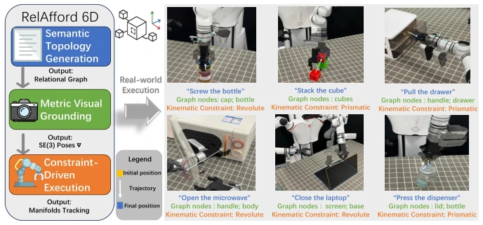
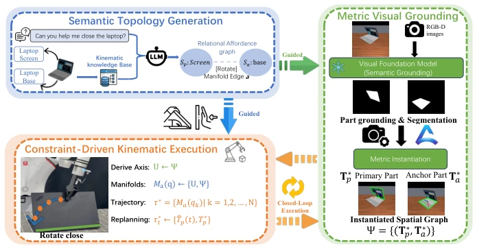
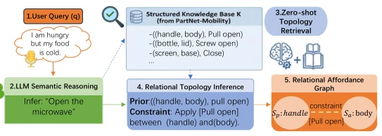
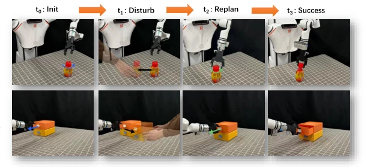

This paper attempts to save end-to-end policies that frequently "hallucinate" in open-world manipulation using "physical constraints". The core selling point of RelAfford6D is appealing: no training, just images. It forces manipulation tasks into the SE(3) geometric manifold, attempting to use mathematical rigidity to counter the chaos of the real world. The advantages are obvious; for objects with clear kinematic structures like drawers and microwaves, it is much more reliable than VLA models that only guess contact points, after all, tightening screws cannot rely on "feeling". But the disadvantages are hidden in the cost of "training-free": it relies extremely on the accuracy of vision foundation models (FoundationPose, SAM3); once segmentation fails, the entire topology graph collapses. Moreover, it simplifies the problem to rotation or translation; for more complex helical or flexible objects, this SE(3) rigidity assumption may not be sufficient. Overall, this is an interesting attempt to counter "soft learning" with "hard physics", but do not expect it to handle all non-rigid objects.
The core pain point of open-world manipulation lies in the gap between perception and control, especially when facing complex articulated objects. Although existing data-driven policies [1, 11, 17, 20, 23, 32] are popular, they have fatal flaws in object representation. Traditional 2D pixel-level affordance [40] lacks 3D physical meaning; methods based on sparse point clouds [27, 34] or keypoints [22] can only provide isolated contact coordinates, unable to encode continuous relative geometric relations between interaction parts. Even advanced dense descriptor fields [13, 43], while expressive, usually treat manipulation as implicit energy field navigation, lacking hard kinematic constraints required for structured manipulation (such as rigid body joint limits). For example, opening a microwave depends not only on grasping the handle but is strictly governed by the relative geometry of the door and the body. Existing methods often lack this explicit, hard kinematic constraint, leading to slippage or execution failure in structured manipulation. RelAfford6D aims to fill this gap by explicitly modeling relative rigid body geometric relations between parts.

Fig. 1: RelAfford6D bridges observations and rigorous physical control for open- world manipulation. From a text prompt, it deduces a Relational 6D Affordance Graph that links a primary interacting part to its physical anchor. By elevating the topolog- ical nodes into metric SE(3) poses, the system formulates execution as a continuous kinematic constraint process, enabling robust, training-free closed-loop manipulation.
RelAfford6D adopts a three-stage pipeline to transform abstract semantics into physical control. First is Semantic Topology Generation, utilizing an LLM combined with Retrieval-Augmented Generation (RAG) and a structured kinematic knowledge base built from PartNet-Mobility to infer the topological relations and constraint types (such as rotation or translation) between interaction parts (Primary Part) and physical anchors (Anchor Part) from natural language instructions. Second is Metric Visual Grounding, utilizing vision foundation models (SAM3) for language-guided part segmentation, then using a category-agnostic pose estimator (FoundationPose) to instantiate topology nodes into precise 6D SE(3) poses, forming an instantiated spatial graph Ψ. Finally is Constraint-Driven Kinematic Execution, redefining manipulation as an SE(3) kinematic constraint satisfaction problem. The system defines geometric manifolds based on constraint types (such as Revolute or Prismatic), performs global obstacle avoidance via RRT-Connect, and then strictly tracks the manifold to generate trajectories during the local execution phase. The key innovation lies in the closed-loop tracking mechanism, monitoring part poses in real-time at a 5Hz frequency; once external disturbances causing changes in physical boundary conditions are detected, the manifold is immediately recalculated based on new coordinates and online replanning is performed, ensuring the trajectory always conforms to physical joint geometry.

Fig. 2: Overview of the RelAfford6D framework. Given a free-form instruction, (a)Semantic Topology Generation deduces a relational graph that explicitly links a primary interacting part to its physical anchor. Then, (b)Metric Visual Grounding elevates these topological nodes into an instantiated spatial graph Ψ = {(T∗ P , T∗ A)} via pixel-aligned SE(3) pose estimation. Finally, (c)Constraint-Driven Kinematic Ex- ecution formulates the manipulation as a continuous manifold tracking problem (e.g., Mrev or Mpris), employing a closed-loop visual feedback mechanism to dynamically re-synthesize trajectories against external disturbances. 3 Method

Fig. 3: Semantic Topology Generation example

Fig. 5: Visualization of closed-loop action execution. Our system performs 6D pose tracking at 5 Hz using FoundationPose. When an external disturbance causes the object to move (second column), the controller detects the deviation and triggers online replanning (third column). The new trajectory (green) replaces the original plan (blue) and successfully completes the task (fourth column).
Experiments are validated on the SAPIEN simulator and Realman RM75 real robot, covering articulated objects (such as drawers, microwaves) and rigid objects (grasping, stacking). Comparison baselines include Where2act [30], FlowBot3D [9], ManipLLM [20], RoboMamba [23] etc. training-based methods. The evaluation metric is task success rate. In articulated manipulation tasks, RelAfford6D achieves an average success rate of 74% without training, outperforming all data-driven baselines (e.g., RoboMamba 68%). In rigid object tasks, it even achieves a 100% success rate. Ablation studies show that removing kinematic knowledge retrieval causes success rate to drop to 65%, while removing closed-loop replanning drops it to 35%, proving that physical constraints and dynamic replanning are crucial for robustness. Real robot experiments achieve an average success rate exceeding 80% on 7 task categories, demonstrating zero-shot transfer capability from simulation to reality.